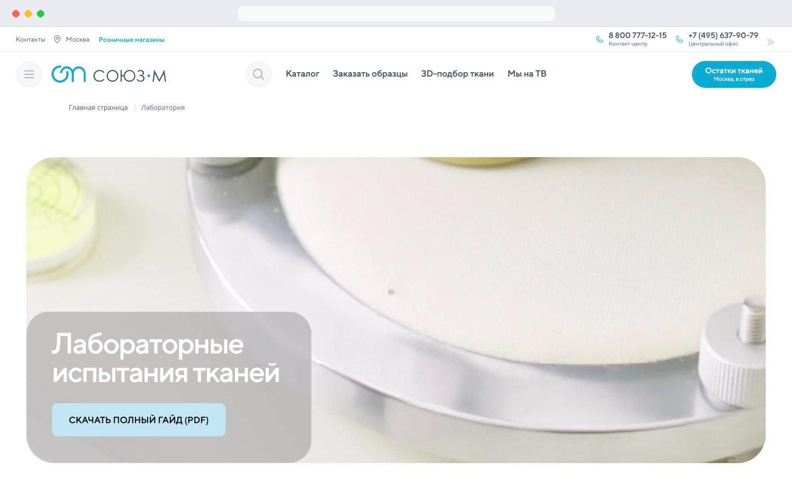
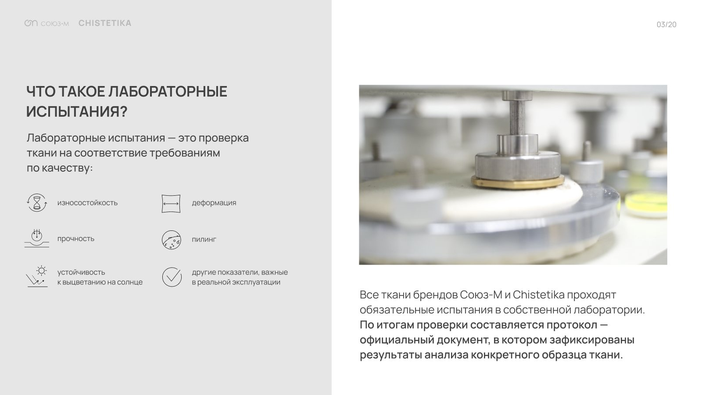
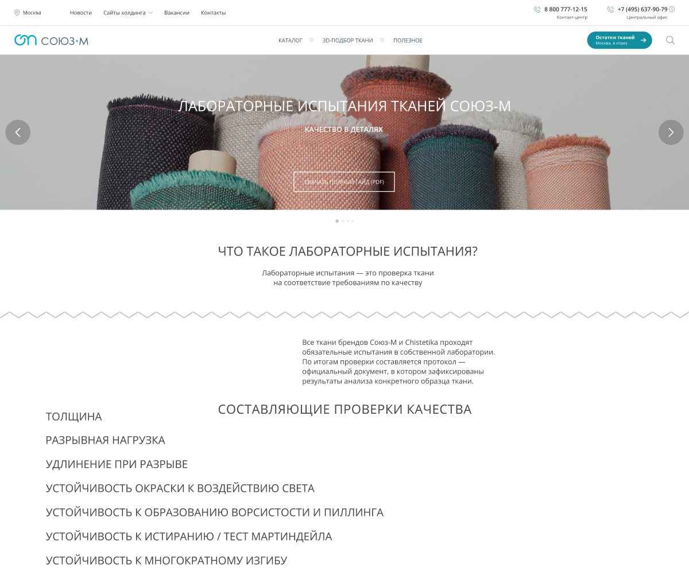
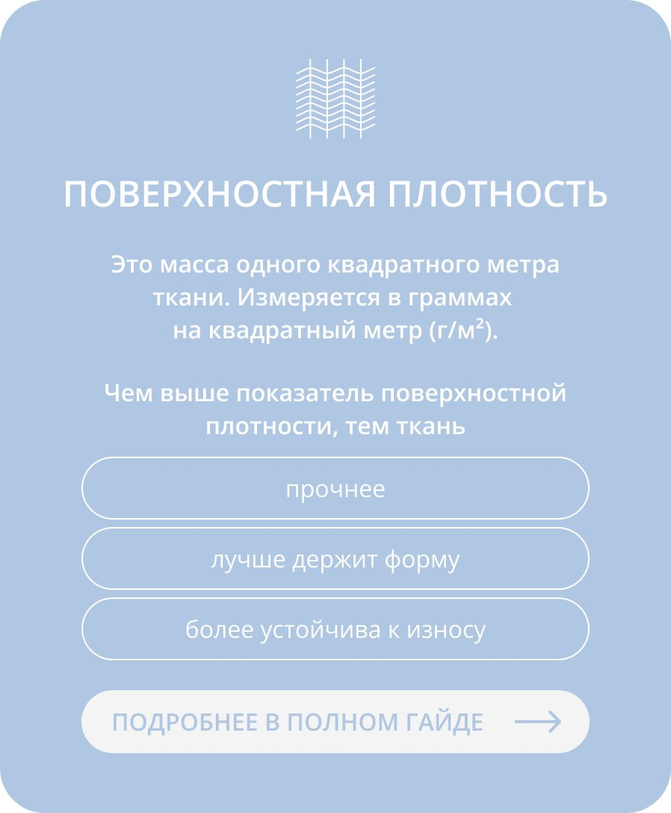
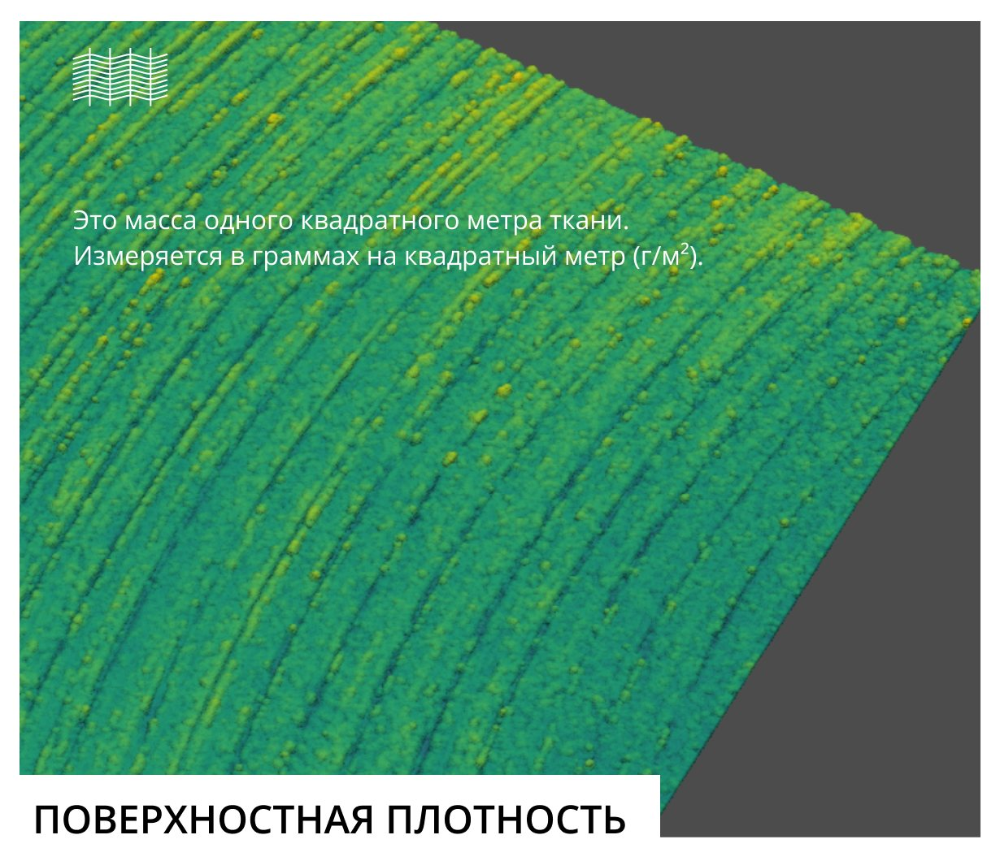
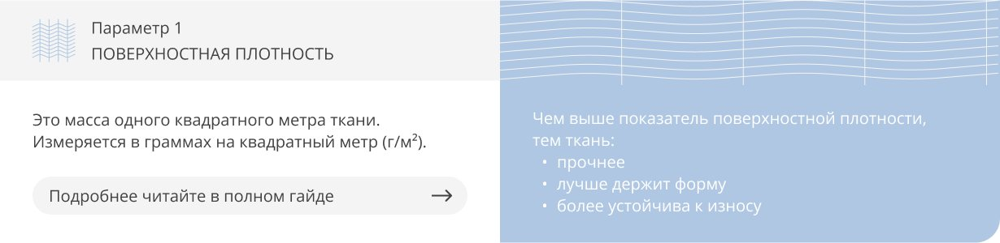
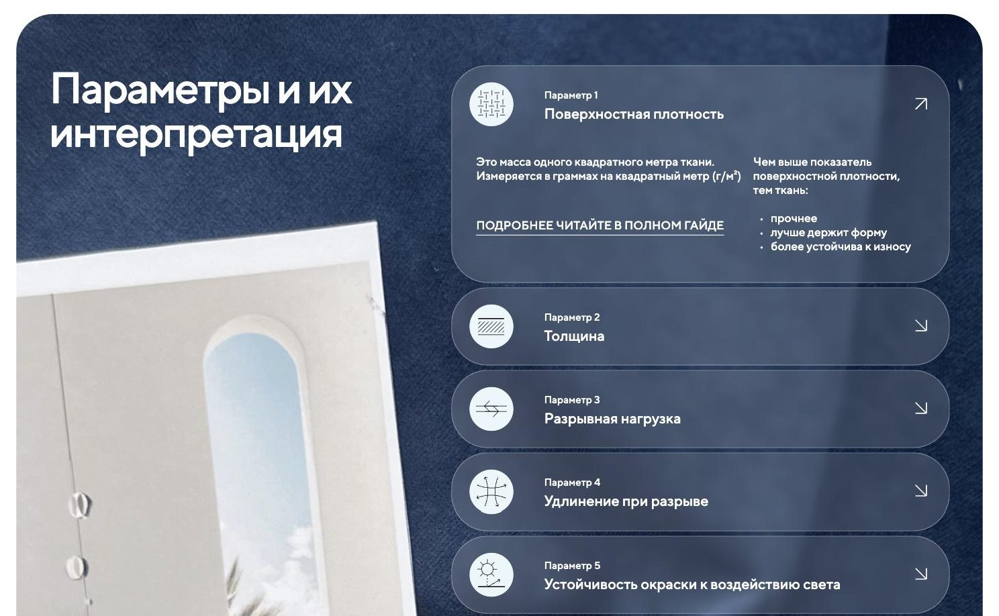
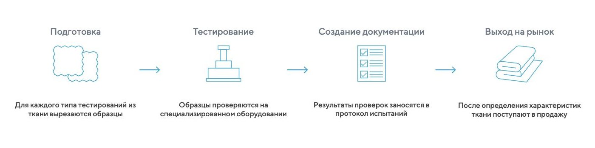
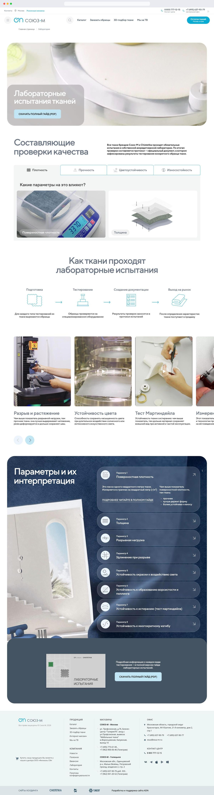

UX Case · 2025
Souz-M Laboratory
Making a hidden lab a selling point
The brief
The ask: a page to host a PDF.
Souz-M sells upholstery fabrics. Every fabric from Souz-M and its sister brand Chistetika is tested in the company’s own accredited laboratory. The specifications on product pages aren’t copied from suppliers — they’re measured.
That was one of the brand’s strongest competitive advantages, and it wasn’t communicated anywhere.
The task was a landing page for a new laboratory guide. I proposed a page that sells the lab itself and uses the guide as its depth.

The problem
- The proof spoke the language of the laboratory. “Martindale abrasion test” means little to someone choosing fabric for furniture.
- Numbers without interpretation are useless. Is 30,000 cycles a lot or a little? Without a reference point, the number does no work.
- A laboratory is a process, not a product. You can’t put it in a cart. The page had to make invisible work visible.
Martindale abrasion test — 30,000 cycles
Will it wear through on a sofa?
Connect the two.
Starting point
The starting material was a technical description of the testing process: methods, standards and units of measurement. I rewrote it as a guide for a non-specialist reader, and Shulman_prod designed it as a 20-page PDF.
The first version of the page moved that content into the website template: a headline, a definition and a list of seven parameters.
Everything was correct. Nothing worked.
The list answered a question the visitor hadn’t asked.
Who the page is for. People choosing fabric for furniture. My working hypothesis was that none of them ask about tests. They ask whether a fabric will hold its shape, fade or wear through. It stayed a hypothesis, and the structure was built on it.


Structure
The page doesn’t replace the guide. It sells it.
Each section answers one question.
- 01 HeroWhat is this? (with an immediate link to the guide)
- 02 What determines qualityWhat do you test, and why should I care?
- 03 How testing worksIs this real or just marketing?
- 04 Tests on videoShow me.
- 05 Parameters and what they meanHow do I read the numbers on a fabric page?
- 06 The guideWhere do I get the full story?
Marked: the order was the decision — properties first, proof second, parameters third.
The guide is offered twice: in the hero for visitors who came for it, and at the end for those the page convinced. Every parameter ends with a link to the guide. The page works as an index to the PDF.
How the structure got there
Decisions
Properties instead of parameters
The laboratory measures eight parameters. Buyers ask about four properties: weight, strength, colourfastness and abrasion resistance.
I grouped the parameters under these properties and made the properties the tabs.
The groups follow the buyer’s question, not the lab’s taxonomy. That’s why one tab holds three parameters and another holds one. Flex resistance applies to faux leather rather than fabric, so it went where a buyer would look for it: under wear.
The visitor enters through a familiar word and leaves with the technical term they’ll now recognise on a product page. Everything else on the page depends on this translation.
Two questions for every parameter
Each parameter answers two questions. First: what is it, and how is it measured? Second: what does it mean for furniture?
A number becomes an argument only when its consequence is stated next to it.
Parameter 3 Breaking force
The maximum force a fabric withstands when stretched until it breaks. Measured in newtons (N).
The higher the breaking force, the stronger the fabric: it withstands tension better, deforms less and holds its seams longer.
Read more in the guide
I tested three layouts for the card: vertical, visualised and two-column. In the released design, Shulman_prod turned the two halves into an expandable accordion, so eight parameters don’t become a wall of text.




Process as proof
Four steps — preparation, testing, documentation, release to market — aren’t there to explain the process. They prove that “tested” means there is a test report behind the claim.
That’s why the test report is named in the page’s opening paragraph.

Language
The technical material had to be rewritten without losing accuracy.
“Pilling” stayed, with a plain explanation: small balls of tangled fibre.
Five-point scales got a threshold, so a score means something:
A score below 4 means the material will lose its colour quickly.
The goal wasn’t to remove terminology. It was to make every term interpretable.
RESISTANCE TO FUZZING AND PILLING
How well a fabric keeps its surface smooth and resists pilling — small balls of tangled fibre — in use. Rated on a five-point scale. A score below 4 means the material is prone to pilling.
Below 4: fades fast.
After handoff
I didn’t create the visual design. The structure, section order and copy went to production unchanged.
Shulman_prod added the visual layer the structure left room for: laboratory photography in the tabs, process icons and a dark parameter section over an interior photograph. That last move takes the conversation from the lab back to the room: from how a fabric is tested to why it matters.

Result
The page is live at souz-m.ru/laboratoriya and linked from the site menu and footer.
I don’t have access to the page’s analytics, so there are no numbers here. The result I can show is the one the brief was about.
Before, the laboratory was the brand’s strongest advantage and existed only inside the company — in test reports no buyer would ever read.
Now it has a public page, a vocabulary and a guide. Every property the brand claims for a fabric can point to a test, and every test to a plain-language explanation. That is what the brand needed to position its fabrics on measured data rather than adjectives.
- Test reports
- Internal only
- Lab language
- Public page
- 4 properties, 8 parameters explained
- 20-page guide
What I’d do next
- Thresholds for every scale. The page answers “is 4 out of 5 good?” but not “are 30,000 Martindale cycles good?” The next step is reference ranges: household use vs. heavy use.
- Show a real test report. The page names the test report as proof but never shows one. A single redacted example would do more than the four-step diagram.
- Close the loop with product pages. Each parameter in a fabric’s specifications should link to its explanation here. The page is a dictionary; product pages are where people need it.